August 28, 2006 (6:25pm)
Riemann For Anti-Dummies Part 67
The View From the Top
by Bruce Director
For more than three millennia the motion of a spinning top has been a source of great amusement for children, scientists, and philosophers. A careful examination of its motion provides insight into the underlying dynamics of the universe and exposes the fraud of absolute space. Plato took great delight in the embarrassment the top’s motion caused his Eleatic and Sophist adversaries, who argued that motion and change did not really exist. Nicholas of Cusa enjoyed the image of a spinning top as a beautiful expression of the universe’s self-boundedness. From a Riemannian standpoint, that same simple spinning top is still a great source of fun, unfolding Cusa’s concept into the domain of hypergeometries, and twisting Plato’s modern adversaries into gnarled knots.
Spin a top or a gyroscope. Watch its motion carefully. What moves? Relative to what? What remains at rest? Relative to what? How do those motions and non-motions change and interact? What do these observed motions indicate about the characteristics of the universe itself, including the characteristics of the human mind?
This latter question, which most occupied Plato and Cusa, is what concerns us in the following pedagogical discussion. To set the stage, let us first look at their view of the top.
Plato introduces the spinning top in the fourth book of the {Republic}, as a refutation of the attempts of the Eleatics and Sophists to deny the power of the human mind to comprehend the physical universe, by promulgating fallacies of composition typified by Zeno’s or Parmenides’ paradox. Such frauds argued that an inherent contradiction existed between thought and physics, which made it impossible for the human mind to know anything about the physical world. This contradiction, the Sophists maintained, could be expressed by investigating motion. Their argument went, that since at every instant a moving body is changing, it must be always simultaneously at motion and at rest. Since this is not possible, either motion does not exist, or, if it does, our minds are incapable of comprehending it. As Parmenides states this in Plato’s dialogue:
“For the instant seems to indicate a something from which there is a change in one direction or the other. For it does not change from rest while it is still at rest, nor from motion while it is still moving; but there is this strange instantaneous nature, something interposed between motion and rest, not existing in any time, and into this and out from this that which is in motion changes into rest and that which is at rest changes into motion....Then the one, if it is at rest and in motion, must change in each direction; for that is the only way in which it can do both. But in changing, it changes instantaneously, and when it changes it can be in no time, and at that instant it will be neither in motion nor at rest.” 1
But Plato recognized the trick. The real target of the Eleatic fallacy of composition was not the physical existence of motion, but the idea that the human mind could know anything about the physical universe. The real fraud, therefore, is not stated in the argument, which flows quite logically, but in the unstated underlying assumption: that all physical motion exists within an absolute space, infinitely extended, rectilinearly, as described later by Euclid, and an absolute time ticking away according to some great time piece that exists, prior to, and outside, the universe itself. Plato cites the spinning top to show that it is physical motion that defines space and time, not, as the Eleatics maintained, {a priori} absolute space and time that defines motion :
Then if the disputant should carry the jest still further with the subtlety that tops at any rate stand still as a whole, at the same time they are in motion, when with the peg fixed in one point they revolve, and that the same is true of any other case of circular motion about the same spot–we should reject the statement on the ground that the repose and the movement in such cases were not in relation to the same parts of the objects, but we would say that there was a straight line and a circumference in them and that in respect of the straight line they are standing still, since they do not incline to either side, but in respect of the circumference they move in a circle; but that when as they revolve they incline the perpendicular to right of left or forward or back, then they are in no wise at rest....No such remarks then will disconcert us or any whit the more make us believe that it is ever possible for the same thing at the same time in the same respect and the same relation to suffer, be, or do opposites”. 2
Cusa took Plato’s argument further, in a dialogue which he called by a Latin word which he inveneted: {“De Possest”}. As Cusa explains it:
For let us agree that there is a single word which signifies by a very simple signification as much as is signified by the compound expression “Possibility exists” (“posse est”)–meaning that possibility itself exists. Now, because what exists exists actually: the possibility-to-be-exists insofar as the possibility-to-be is actual. Suppose we call this {possest}. All things are enfolded in it and {possest} is a sufficiently approximate name for God, according to our human concept of Him. 3
To illustrate this concept Cusa introduces the metaphor of a top spinning with “infinite” velocity (circle bc) inside a fixed circle (de). (See Figure 1.)
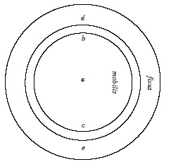
CARDINAL: Let it suffice, that by means of this image and metaphorically, we are somehow able to see how it is that (if the circle bc were illustrative of eternity and the circle de were illustrative of time) the following propositions are not self-contradictory: “that eternity as a whole is at once present at every point of time”; “that God as the Beginning and the End is at once and as a whole present in all things” and so on for other such propositions.
BERNARD: Things which are separated for us are not at all separated in God. For example, d and e are separated by that diameter of the circle of which they are opposite points. But there is no such separation in God; for when b comes to d, it is at the same time also at e. Similarly, all the things which are separated in time in our world are present before God. And all the things which in our world are separated as opposites exist conjointly in God. And all the things which here are different are there identical. 4
For Plato and Cusa the spinning top was not merely a toy. Its motion reflects, in microcosm, the movement of the physical universe, such as the motion of the heavenly bodies, and the characteristics of the metaphysical principles governing that motion. Our notions of time and space are not absolute. They are inseparable from this physical motion.
As Plato describes this in the {Timaeus}:
Accordingly, seeing that that Model is an eternal Living Creature, He set about making this Universe, so far as He could, of a like kind. But inasmuch as the nature of the Living Creature was eternal, this quality it was impossible to attach in its entirety to what is generated; wherefore He planned to make a movable image of Eternity, and, as he set in order the Heaven, of that Eternity which abides in unity He made an eternal image, moving according to number, even that which we have named Time...
Time, then, came into existence along with the Heaven... 5
For at least the last three thousand years, all progress in civilization has occurred by rejecting the sophistry of absolute space and time, and all periods of regress and stagnation, including our own, have been characterized by the popular acceptance of some notion of absolute space and time. This is why every great scientist, from Plato, to Philo, to Augustine, to Cusa, to Kepler, Fermat, Leibniz, Gauss, Riemann and Einstein, have all polemicized against the Eleatic sophistry of absolute space and time. Once science, or the population as a whole, accepts the idea of absolute space and time, they become suckers for such fallacies of composition as, “motion does not exist”, or, “wealth is derived from money”.
But something else is posed by Plato’s and Cusa’s metaphor of the spinning top. The self-boundedness of the universe is expressed in physical action by harmonic characteristics, or what modern science would call the quantization of space-time. Such quantized harmonic characteristics are exemplified by the uniqueness of the five regular solids, Kepler’s harmonic principles of planetary motion, the periodic and crystallographic characteristics of physical chemistry, and Planck’s quantum of action.
Such quantized harmonic characteristics, though recognized much earlier, could not be adequately understood, however, until Gauss’s development of the complex domain, and Riemann’s elaboration of it through his work on Abelian and hypergeometric functions. For this, we again turn to the spinning top.
The Spinning Top and Elliptic Functions
Look again at the spinning top without the prejudices of Euclidean type notions of space and time. Stand a top on its tip. What is its motion when it is not spinning? A rotation in the direction of the pull of gravity. What is its motion when it is spinning? This is more complex. For the top is not spinning in absolute space. It is spinning with respect to a gravitational potential. That means that the top’s motion is the effect of the interaction of the characteristics of its spin and the gravitational potential.
This combined action produces a single complex motion expressed by the connected motion of the top around its axis and the motion of the axis itself. This latter motion is called precession, and is, in general, incommensurable, with the top’s rotation around its axis.
Were the top to be perfectly symmetrical and spinning so that its axis of rotation were perpendicular to the pull of gravity, the precession would be zero. But, as Cusa notes in {De Docta Ignorantia} there is no perfect circle, (or symmetrical top) in the physical universe. Because of this uneven distribution of the top’s mass, both gravity and the spin of the top will be acting together on the top’s motion. Consequently, a real spinning top will have both rotation and precession. This motion is a microcosm of the Earth’s motion, whose rotation produces a non-spherical shape. Consequently, the Earth exhibits precession which is observed as the approximately 26,000 year cycle of the procession of the equinoxes. 6
Thus, the motion of the spinning top is neither the motion {around} the axis, nor the motion {of} the axis, but the {connected} motion of both, produced by the {connected} action of rotation and gravity. Doubly connected action of this type, since the discoveries of Gauss and Riemann, has been characterized by what have come to be called {elliptic functions}.
Like Kepler’s planetary orbits, the top’s motion is not occurring in the absolute Euclidean-type space of Newton, Euler, Kant, et al. It is the physical principles governing the motion which define the characteristics of space and time. For the planetary orbits, Kepler emphasized, it is the harmonic characteristics of the solar system that define the path of the planet and the motion of the planet itself which defines time. The characteristics of the governing physical principle emerge, in the discontinuity between determining the time as a function of the planet’s position and determining the planet’s position as a function of time . (The Kepler Problem.)
Similarly with the spinning top. It is when the position of the top is defined as a function of time, determined by the motion of the top itself, that the elliptical function arises. {Thus, the motion of the spinning top is defining a physically determined anti-Euclidean space-time}of the type identified by Kepler, Leibniz, Gauss, Riemann, and in a somewhat weaker form, by Planck and Einstein.
Though such elliptic functions, are associated by name with an ellipse, they are nevertheless much more universal. They are not derived from the formal geometrical properties of an ellipse, but from the metaphysical implications of the physical existence of non-uniform motion, exemplified by Kepler’s determination of the elliptical nature of the planetary orbits. Though these functions have been treated in some detail in previous installments of this series, we take a quick spin through the history of their development, in order to keep the essential concepts clear and fresh in the mind of the reader.
The earliest recorded expression of what modern physics would recognize as an elliptical function is Archytas’s construction for determining two geometric means between two extremes. The “elliptical” characteristic of this construction becomes most apparent when contrasted with the general form of the construction of one geometric mean between two extremes.
In the latter case, the general construction for generating the proportions of one geometric mean between two extremes is expressed by the rotation of a right-angle in a semi-circle. (See Figure 2.)
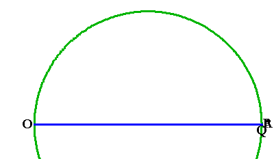
In this case, the magnitude is generated by the connected relationship of the {non-uniform} motion of a point on a circle (P) and a point on a line (Q). The non-uniformity of this motion is intrinsic to the construction. If the motion of (P) is uniform, the motion of (Q) is non-uniform. If the motion of (Q) is uniform, the motion of (P) is non-uniform.
Thus, the magnitude that has the power to create one geometric mean in a given proportion, is a type of quantity which Cusa would identify as arising from the difference between the straight and the curved.
However, as the Archytas construction demonstrates, the magnitude that has the power to generate two geometric means between two extremes, depends on rotating that circle in which one geometric mean is generated. In this case, the point (Q) is moving, not just on a line, but simultaneously on a circle. Point (P) is moving, not just on a circle, but also, simultaneously on the “bold curve” which is the intersection of the torus and cylinder swept out by the action of the double rotation. (See Figure 3.)
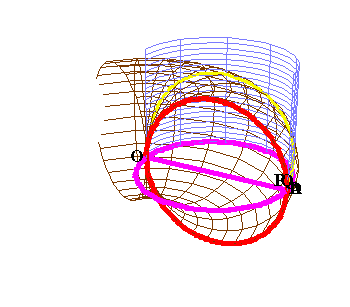
Thus, extending Cusa’s concept, the “cubic” magnitudes depend on a type of quantity arising from the difference between the straight and two distinct types of curves. It is a single quantity expressing a doubly connected action.
As Cusa, Leibniz, Gauss and Riemann all emphasized, such quantities are determined not by any precise magnitude, but by the {type, or species,}of incommensurability which expresses the quantity: a principle identified in the last installment of this series, as a matter of precise ambiguity.
As Cusa also states in {De Possest}:
CARDINAL: We know that we cannot obtain any numerical proportion between the diagonal and the side of a square, since no two numbers can be exhibited which are related to each other in precisely this way. Given any two numbers, the relationship between them is either greater or lesser than the relationship between the diameter and the side. And given any two numbers, two other numbers can be found which are closer to the relation in question. Hence, although it seems possible that there are two precise numbers, this possibility is never actually exhibited. (But the actualization would be the precise proportion, so that the numbers would be related in this precise way.) The reason is that unless there is exhibited a number which is neither even nor odd, it will not be the number in question. But every number which we conceive is, necessarily, even or odd (but not both). And so, we fail to find the desired number. However, we see that precision is present in that concept which expresses what is impossible for us to conceive. Thus, we have to say that our concept cannot attain to the proportion between the possibility and the actuality. For we have no common medium by which to attain to the proportion between the possibility and the actuality. For we have no common medium by which to attain to the relationship, since the possibility is infinite and indeterminate, whereas the actuality is finite and determined; and between these there is no middle ground. But we see that these viz., possibility and actuality are not distinct in God. And so, He is above our concept. 7
With Kepler’s determination of the elliptical characteristic of the planetary orbits, Cusa’s insistence that physical action depends on such precise ambiguities was given a new light. However, as we have developed in earlier installments of this series, Kepler’s identification of a new type of ambiguity associated with elliptical motion (the “Kepler Problem”), posed, for Leibniz, Gauss and Riemann, the existence of a still higher type of quantity, than that identified merely by the difference between the curved and the straight.
This is because elliptical motion is generated by a species of quantity arising from a double incommensurability (the arc and the angle), similar to the action expressed in the Archytas construction. (See Figure 4.)
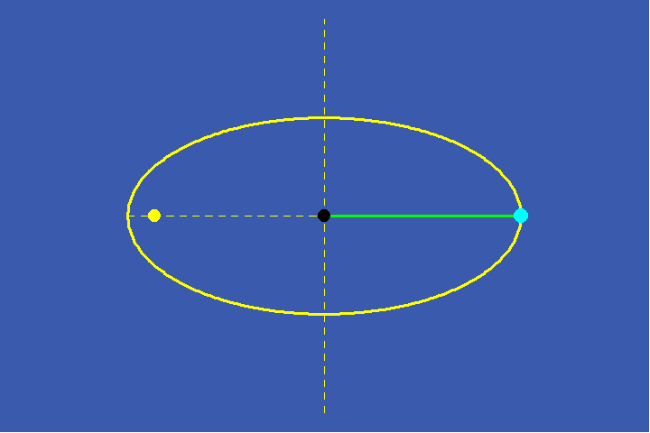
This is distinct from the quantities associated with merely circular action which arise from a single difference between the straight and the curved. (See Figure 5.)
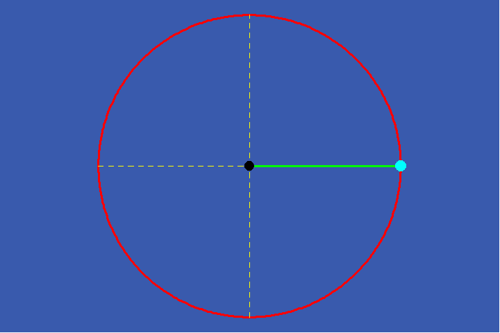
Gauss showed, as we developed in the last installment of this series, that such “elliptical” quantities are associated, not with the arithmetic, harmonic, or geometric means, which arise from a circular or hyperbolic action, but with a higher transcendental: the arithmetic-geometric mean.
Because this type of magnitude arose out of Kepler’s discovery of elliptical motion, such magnitudes have historically been called “elliptical functions”. But as the investigations of Gauss, Abel, Jacobi and Riemann have all indicated, these functions are much more universal, characterizing such physical action as exemplified by the motion of a pendulum, a spinning top, or the rotation of the Earth. Further, the discovery that these types of physical action depend on such a higher transcendental, paved the way for Abel’s discovery, and Riemann’s elaboration, of an extended domain of higher transcendentals associated with the concept of hypergeometries.
This aspect of the spinning top’s motion was a focus of mid-19th century science, with Gauss, Riemann, Dirichlet, Jacobi, et al., producing extensive investigations of physical problems from this anti-Euclidean standpoint. In reaction, the formalists tried to resurrect the dead absolute space of Aristotle, Newton, Euler and Kant. Most notable in this regard are the extensive 1895 lectures on the motion of the spinning top produced by Felix Klein and Arnold Sommerfeld. These lectures, which were published in four volumes totaling almost one-thousand pages, carefully detail the physics of the spinning top and its application in the field of astronomy, geodesy, geomagnetism, and many other fields of physics. Yet, despite the very interesting, and potentially useful results contained in these pages, there is a devastating underlying assumption that opened the door to the revival of the same Eleatic sophistries that Plato combatted, and which destroyed Greek culture more than 2500 years earlier: the existence of absolute space.
Klein himself proudly admitted this deficiency in his summary lectures on the subject given in October 1896 at Princeton University. After describing how the motion of the spinning top can be mathematically characterized by elliptical functions, as Jacobi had previously elaborated, Klein confessed:
The transformation therefore represents a real free motion in non-Euclidean space...
I close the present lecture with two remarks.
First, there is nothing essentially new in the considerations with which we have been occupied thus far. I have merely attempted to throw a method already well known into the most convenient form for application to mechanics.
Second, the non-Euclidean geometry has no metaphysical significance here or in the subsequent discussion. It is used solely because it is a convenient method of grouping in geometric form relations which must otherwise remain hidden in formulas. (emphasis in the original.) 8
Klein’s view expressed the epistemological degeneration that science and society were undergoing at that time, under pressure from the British-led oligarchy’s reaction to the growing optimism associated with the spread of the American system that followed Abraham Lincoln’s victory in the U.S. Civil War. Just as their Babylonian and Persian ancestors pushed the idea of absolute space and time to counteract the confidence in the power of ideas embodied in the Pythagorean science of Sphaerics, the pessimists of the late nineteenth century desperately tried to resuscitate this sophistry in reaction to what had appeared to be its definitive burial by the combined work of Leibniz, Kaestner, Gauss and Riemann. This effort is typified by the just described actions of G.W.F. Hegel’s grandson-in-law, Felix Klein. Klein’s approach to science, in conjunction with the work of Bertrand Russell, Ernst Mach, Friedrich Nietzsche, et al., is paradigmatic of the degeneration which paved the way for the emergence of the irrationality and pessimism in science typified by the Copenhagen interpretation of quantum phenomena. This spread of sophistry in science reflected, and fostered, the growing disregard for truth that held sway over a twentieth century which, but for the efforts of Franklin Delano Roosevelt’s U.S.A., was dominated by synarchism, economic depression, and war. The recognition of this connection between the degeneration of science and society led Einstein to lament, in a letter to Max Born, that his efforts to resist the widespread acceptance of irrationality in science made him “as lonely as Leibniz in his fight against Newton on absolute space.”
Such disregard for truth reached a relative peak with the Baby Boomer degeneration. But LaRouche’s discoveries in the science of physical economy, the rapid progress of the LaRouche Youth Movement in mastering this, saner, anti-Euclidean approach to science, and the urgent requirement to harness sub-nuclear and astrophysical processes, creates the possibility, and the necessity, to apply the science of Cusa, Kepler, Fermat, Leibniz, Gauss and Riemann, to the problems of modern science and society. To aid that process, we must turn again to the spinning top.
The Spinning Top and Hypergeometries
Despite Klein’s insistence to the contrary, the anti-Euclidean nature of the spinning top’s dynamics has {profound} metaphysical significance. In denying this, Klein employs the ancient sophist’s trick. By excising the physical dynamics of the top’s motion from its mathematical description, and equating its {anti}-Euclidean characteristics with the sophist’s {non}-Euclidean mathematics, Klein surreptitiously assumes the existence of an {a priori} absolute space in which the top moves. Once this is accepted, neither the top’s actual dynamics, nor the more fundamental implications, can be discovered, as Klein readily admits. For Klein, only a mathematical description can be given, which, like Ptolemy’s, Copernicus’s or Brahe’s models of the solar system, is not true, but merely one of mathematical convenience. Like Euclid previously, Klein’s approach seeks to codify the results of an actual discovery while at the same time obfuscating its creative source. But as Kepler emphasized, science should seek only what is true, not what is convenient. Thus, the metaphysical significance of the elliptical characteristic of the spinning top’s motion must be emphasized. To understand that significance we must turn back to Cusa.
Cusa uses the metaphor of a top spinning with “infinite” velocity as an image of the self-boundedness of the universe in which all possible motion is “enfolded”, and from which physical motion is “unfolded”. As he states this in {De Possest}:
CARDINAL: I want to say that as-enfolded-in-God all these things are God; similarly, as-unfolded-in-the-created-world they are the world. 9
Contrary to his Aristotelean opponents, Cusa’s notion of “unfolded” physical motion is not separate from the principle from which it unfolds. Thus the characteristics of the physical top spinning with “finite” velocity reflect the characteristics of the universe as a whole. Those characteristics, however, can not be investigated directly in the “enfolded” form. Therefore Cusa adopts a Socratic approach to this investigation:
CARDINAL: We need to presuppose, Abbot, what you have heard from me on another occasion: viz., that there are three theoretical investigations.
1. The lowest of these three is physics, which centers on nature and examines inabstract forms which are subject to change. For nature is form-in-matter; and so, in matter form is not abstract and is in something other than itself; and, hence, it exists otherwise than it does in itself. Therefore, it is continually being changed, or altered, in accordance with the instability of the material. The soul, by the senses and by reason, investigates this type of form.
2. Another theoretical investigation is the investigation of the Form which is completely abstract absoluta and completely stable–which is divine and is free of all otherness and so is eternal and without any change or variation. The soul, by itself and without images, investigates this Form. The soul seeks it beyond all understanding and learning–by its own highest acumen and simplicity, which some persons call intellectuality.
3. There is also a theoretical investigation which is in between these two. It deals with inabstract forms which are, however, stable. (This investigation is called mathematics.) For example, it deals with a circle which, although it is free from corporeal and unstable material, is not free from every subject and from all intelligible material. For it does not deal with a circle as it is in a corruptible floor but as it is in its own rational ground, or definition. And this theoretical investigation is called mathesis or disciplina. For it is passed on by way of learning. And in investigating it, the soul uses the intellect together with the imagination. I have written elsewhere about these points. 10
Taking Cusa’s approach as our starting point, let us investigate the physical motions of the spinning top from the more elaborated expression of Leibniz, Gauss and Riemann. From this standpoint, the metaphysical implications of the top’s motion, which were shunned by Klein, become most important, as they express the characteristic of the universe to be an anti-Euclidean self-bounded hypergeometric domain.
Look again at the physical motion from the top. Unlike Cusa’s metaphorical top, the physical top spins with finite velocity and with precession. The manifold of all possible such physical motions is bounded by motion with maximum rotation and minimum precession to minimum rotation and maximum precession. An actual spinning top will move through this manifold as the effect of friction slows it down, constantly changing the relationship between rotation and precession.
In 1758, Euler described the motion of the spinning top by constructing mathematical formulas that assumed it was moving in an absolute, Euclidean type space represented by three orthogonal rectilinear axes, x, y, z. He then constructed a second set of axes, x’, y’, z’ such that the z’ axis corresponded to the axis of rotation of the top. The relationship between these two sets of axes could be described by the three angles they formed with each other, which have become known as the “Euler angles”. Euler’s formulas described the top’s motion as a function of these three angles, organized in a 3 x 3 matrix that expressed the angular relationship of each coordinate axis to all the others. Though it was possible, from this standpoint, to express the relative position of these axes with each other, it was not possible to express how these positions were changing with time. That is because the relationship between time and position is a function of a non-linear physical principle, not-Euclidean axioms. This relationship between time and position gave rise to set of differential equations that Euler could write down but could not solve, except for exceptional cases.
In 1849, Jacobi showed that if he rejected Euler’s approach of trying to describe the motion of the top in absolute space, and instead investigated the nine relationships between the axes as a function of the periodic time, the top’s motion could expressed by elliptical functions.
Klein took Jacobi’s result and applied to it Gauss’s and Riemann’s geometrical representation of elliptical functions. But, as noted above, in rejecting the metaphysical significance of both Gauss’s and Riemann’s idea of the complex domain, and the metaphysical significance that the top’s motion is expressed by an elliptical transcendental, Klein not only missed the boat, he committed a fraud.
To investigate these metaphysical considerations, consider the motion of the top from the standpoint of a Riemann surface.
First, consider the case of an ideal top spinning with a finite velocity but no precession. Mapped onto a Riemann sphere, this motion would be expressed by a simply-periodic rotation of the sphere around an axis. Such a rotation corresponds to a simple transcendental function such as the circular, hyperbolic, or more generally, exponential functions. (See Figure 6.)
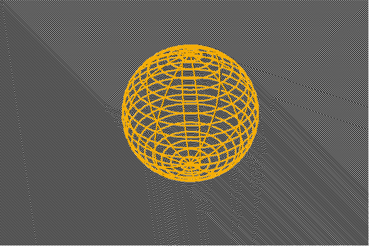
These functions can be defined, inversely, by what Gauss called their “modular” function. In the case of these simple transcendentals, the modulus of periodicity is an interval of one rotation, or 2Pi. Each period is represented on the Riemann surface as a strip whose width is 2Pi. (See Figure 7.)
In this simple modular function the addition of a multiple of 2Pi to any strip maps it onto a congruent region.
This type of modular function is a special case of a complex function that Gauss discovered, but, since he never published his results, they have come to be called “Moebius transformations” after his student Ferdinand Moebius who elaborated their characteristics. These Moebius transformations map a Riemann sphere onto itself. (See Figure 8 a,b,c,d.)
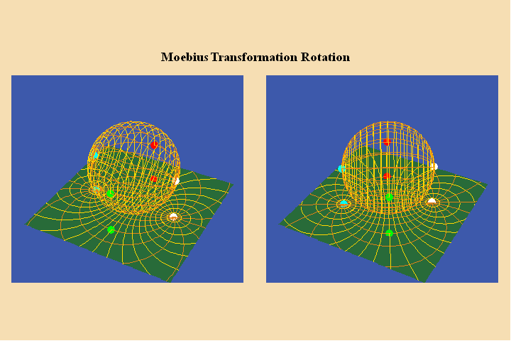
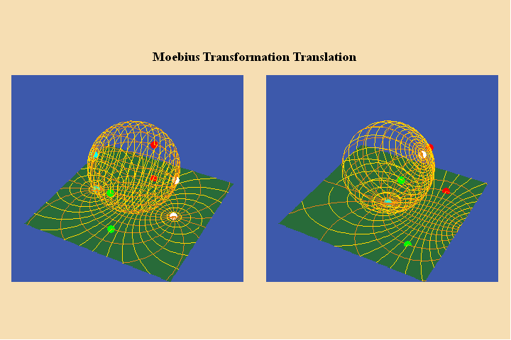
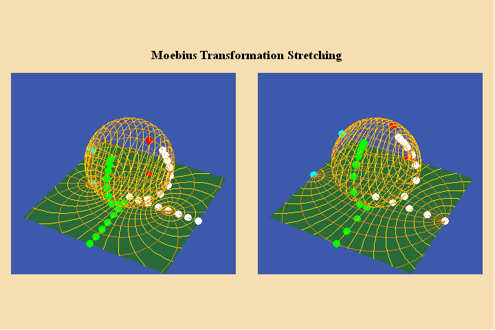
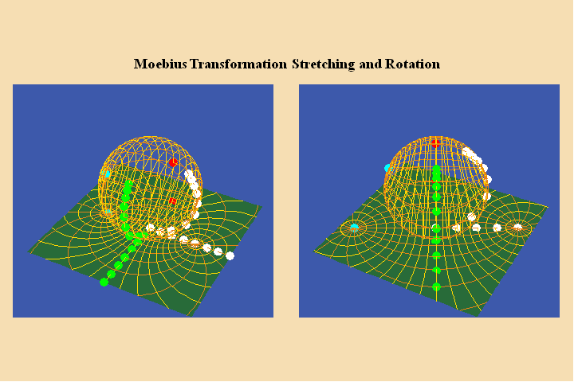
The unique type of Moebius transformation, discovered by Gauss, maps the sphere onto itself without stretching, are the type associated with elliptic functions. (See Figure 9.)
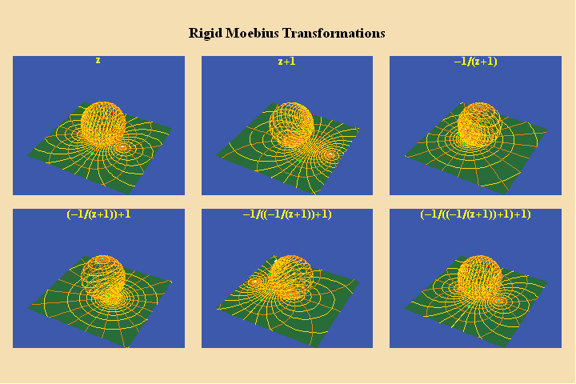
The only variation among the modular functions associated with these simple transcendentals is the direction of the modulus of periodicity and the position of the branch points. From this standpoint it is easy to see, geometrically, why the circular and hyperbolic functions can be expressed by the exponentials, as opposed to the convoluted formalism that Euler used.
But just as the orbits of the planets are not circular, neither is the true motion of a top. An actual top, rotating with respect to a gravitational potential, has both rotation and precession, each with a distinct, but connected periodicity. As discussed above, this type of doubly periodic motion is associated, in general, with elliptical functions. This change from a simply periodic transcendental to a doubly periodic one, like the change from line to surface and surface to volume, is discontinuous. (See Figure 10.)
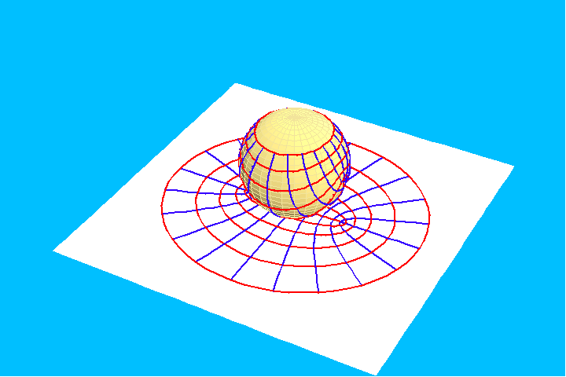
There is no middle ground between simple and elliptical transcendentals.
Now consider a top rotating at a constant speed. This motion maintains a constant relationship between its angular rotation and its precession, corresponding to a unique elliptical function. This elliptical function can be expressed by mapping this motion onto a Riemann sphere using Gauss’s form of Moebius transformations. (See Figure 11.).
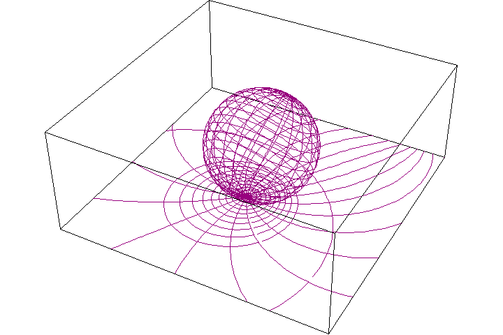
If the relationship between the angular spin and precession were to change, this new motion would define a different, but also, unique, elliptical function. Thus, the uniqueness of an elliptical function can be expressed by the ratio of the two periods.
Each unique elliptical function corresponds to a unique modular function in which the modulus is expressed as a parallelogram whose shape reflects the ratio of the periods. (See Figure 12.)

Riemann considered this parallelogram to be the map of a torus. (See Figure 13.)

If the ratio of the periods is small the shape of the torus is fat. If the ratio of the periods is large, then the corresponding torus will be a different shape. (See Figure 14.).
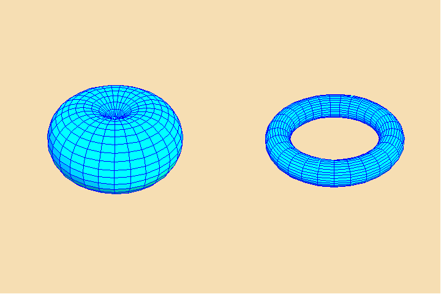
Just as the circular and hyperbolic functions can be expressed by the exponential function, the ratio of the periods of an elliptical function can be expressed by a hypergeometric function of the type that Gauss discovered with respect to the arithmetic-geometric mean. (See Riemann for Anti-Dummies Part 66.) 11
But for a spinning top whose motion is changing, such as due to friction at the tip, the ratio between the periods is also always changing. Thus the only appropriate way to characterize the general motion of a spinning top is with respect to the entire manifold of all possible elliptical functions. This entire manifold can be expressed by what Gauss and Riemann identified as {the elliptical modular function}.
Gauss showed that though each unique elliptic function is associated with a unique modular function, there is a unique set of Moebius transformations that is common to all elliptical functions. This set corresponds to the six different variations of the Moebius transformation z+1 and -1/z. Repeated application of these transformations produces a six-fold cycle. This is the same six-fold cycle associated with the projective invariance of the cross-ratio. (See Riemann for Anti-Dummies Part 65.)
Gauss developed the first image of the elliptical modular function in his investigation of the arithmetic-geometric mean. (See Figure 15.)
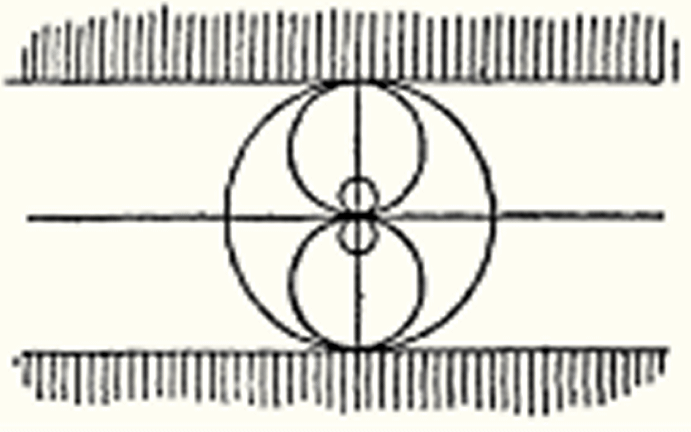
That image was further elaborated by Riemann in his lectures on Gauss’s hypergeometric function. (See Figure 16.)
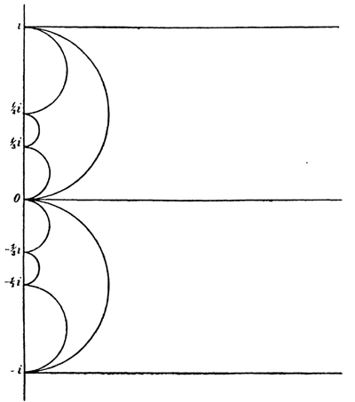
A computer generated image, rotated by 90 degrees can be seen in Figure 17.

In the latter picture, each colored region is bounded by three circular arcs. The blue region marked “z” contains the fundamental period ratio for all possible elliptical functions. For this reason, Gauss called this region, “the fundamental region”. This blue region is mapped onto each of the other regions by the successive application of the Moebius transformations z+1 and -1/z. Under each transformation, the fundamental period of a specific elliptical function is mapped to all its congruent ones.
Thus, Gauss’s and Riemann’s map express, as an image, the {idea} of the manifold of all possible elliptical functions. The top’s motion must be considered as a pathway within this elliptical manifold. This image, however, must be understood, as Cusa would indicate: it is only a {mean} between the physical form and the true idea.
There is still more to the top’s motion that we have, up until now, ignored: the motion of the tip itself. If the tip is stationary, the spinning top’s motion can be characterized as a pathway in an {anti}-Euclidean elliptical manifold. But if the top’s tip is moving, that adds an additional action to the overall motion of the top. Such additional action is characterized, not by elliptical, but by hyper-elliptical functions.
Such hyper-elliptical functions, Riemann showed, are expressed by a different type of modulus and a different type of modular function. (See Figure 18.)
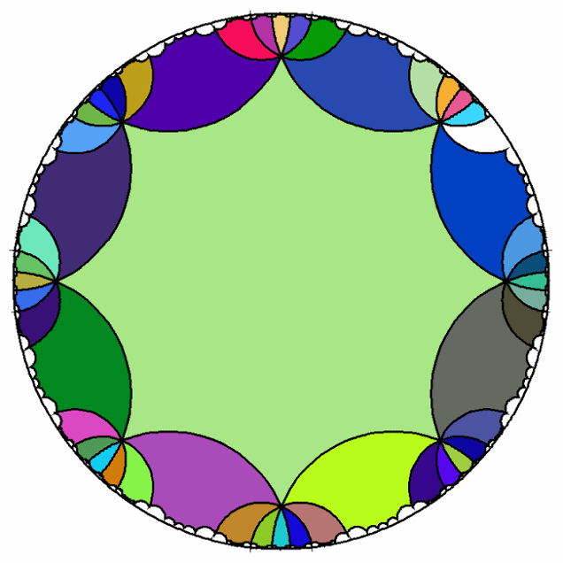
Whereas the elliptical modular functions are associated with a Moebius transformation that maps a sphere (which is self-bounded and positively curved) without stretching, the hyper-elliptical modular functions are expressed by a unique type of Moebius transformation that maps a self-bounded negatively curved surface without stretching.
At this point in our investigation the example of the simple spinning top becomes an insufficient example of a physical expression of still higher forms of hypergeometries. But if we follow the top’s motion, as Riemann indicated, into the astrophysical and microphysical domains, such higher forms of hypergeometries emerge. For example, consider the actual motion of the Earth, around its axis, around the Sun and precession; or the motion within and among the galaxies; or the motions in the sub-atomic domains indicated by the experimental evidence of physical chemistry.
This succession from simple transcendental, to elliptical, to hyper-elliptical illustrates another significant metaphysical principle. Each species of transcendental function is bounded, not on its exterior, but everywhere, by the characteristics of the principle that it encompasses. The modular function for each species of transcendental expresses this boundedness, as a unique type of quantization. Yet there is another, higher form of quantization. This is associated with the discontinuities between each species of transcendentals. The boundedness of this “species of species” expresses nothing less than the self-boundedness of the universe itself.
These types of considerations led Riemann to lay the foundations of an even broader concept of multiply-extended manifolds, both in general form, as in his 1854 habilitation dissertation, and in some specific physical examples, such as his studies of heat or the motion of a fluid ellipsoid, which will be explored in future installments of this series.
Such examples are the starting point from which to approach the pending problems of physical science. But such efforts will not succeed, as Riemann noted in his habilitation paper, unless “this task shall not be hindered by too restricted conceptions, and that progress in perceiving the connection of things shall not be obstructed by the prejudices of tradition”.
The most pernicious of such traditions is the belief in absolute space.
NOTES
1. Plato, Parmenides 156d-e translated by Harold N. Fowler, www.perseus.tufts.edu
2. Plato, Republic Book 4, 436d-437a, translated by Paul Shorey, www.perseus.tufts.edu
3. Nicholas of Cusa, De Possest 14, translated by Jasper Hopkins, http://cla.umn.edu/sites/hopkins
4. Nicholas of Cusa, Op. Cit. 19-20
5. Plato, Timaeus 37d; 38b; translated W.R.M. Lamb www.perseus.tufts.edu
6. The actual shape of the Earth is quite complex, and so its motion is more complex than a spinning top. In conjunction with Dirichlet, Riemann studied this phenomenon, producing a treatise about it on the subject of the motion of a fluid ellipsoid. This work contains some important results of more general significance which will be treated in a future pedagogical.
8. Felix Klein, The Mathematical Theory of the Top, Charles Scribner’s Sons, New York, 1897.
11. These functions were called “theta” functions by Jacobi and Riemann. As distinct from the exponential functions whose proportionality of growth is constant, the “theta” functions are characterized by a proportionality of growth that is changing exponentially. An example of a type of “theta” function are the functions P and Q which Gauss used to express the arithmetic-geometric mean. These functions are defined by a series whose exponents are squares. Consequently, the proportionality of growth of these series is always increasing, specifically, by the odd powers.